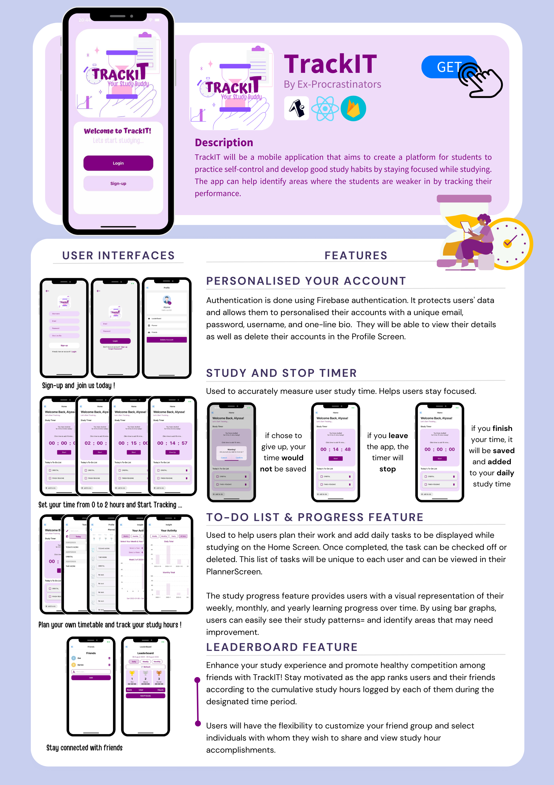

Orbital 2023: TrackIT
In the summer of 2023, I participated in a three-month module called Orbital. The module focused on developing a practical application to address an issue I had identified as a student. Collaborating with my teammate, Zobelle, we developed and programmed a Productivity App called TrackIT.
Over the course of these three months, I acquired new skills and knowledge. I became familar with using React Native and JavaScript programming, allowing me to construct the front end of our application. Additionally, I learned how to integrate Firebase into our app, enabling efficient data management. I grasped fundamental principles of software engineering, including code organisation, testing, debugging, and the significance of creating an intuitive user interface.
The experience of building an app from the ground up was immensely gratifying. Witnessing our product come to life was truly rewarding. Through this project, I also developed essential soft skills. Effective teamwork, adept time management, and a strong work ethic became ingrained in my approach. Since our project was largely self-directed, my partner and I relied on online resources such as videos and forums for learning. Many challenges we encountered required seeking solutions from the bigger online developer community.
What did we achieved?
Our app, TrackIT, originated from the aspiration to decrease phone-related interruptions while studying. We recognized that smartphones pose a significant distraction, particularly for students. Our goal was to establish a platform that promotes self-discipline and nurtures productive study routines. TrackIT incorporates several key features to facilitate this objective.
Study Timer
The Study Timer accurately tracks study durations and pauses when the app is exited, ensuring precise time tracking.
To-Do List
The To-Do List empowers students to efficiently manage their time by planning tasks and allocating study slots.
Progress Tracking
Progress Tracking helps students monitor and refine their study habits by visualizing their learning journey.
Leaderboard
The Leaderboard fosters healthy competition among students and motivates active engagement in studies.
In summary, TrackIT was developed to mitigate distractions caused by phones during study periods. Through its diverse features – Study Timer, To-Do List, Progress Tracking, and Leaderboard – the app aims to instill effective time management and focused learning practices within the student community. The picture below shows our programme flow
Find Out More
To test our app, please download Expo Go and scan the QR code below (Android Users Only). More instructions can be found at the bottom of our project's README.
TrackIT Poster
